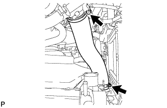
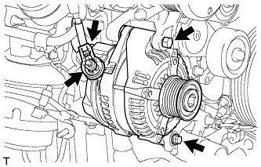
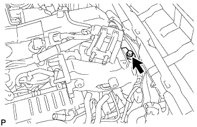
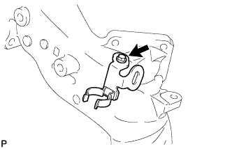
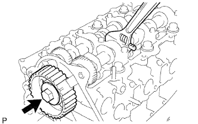
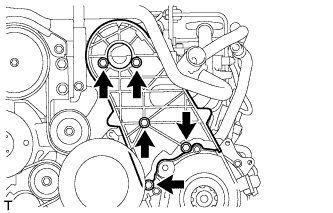
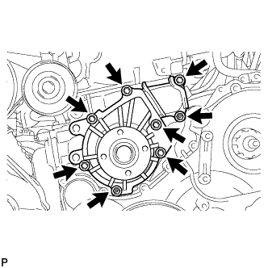

НАСОС СИСТЕМЫ ОХЛАЖДЕНИЯ (для моделей с DPF) > СНЯТИЕ |
| 1. ОТСОЕДИНИТЕ ПРОВОД ОТ ОТРИЦАТЕЛЬНОГО ВЫВОДА АККУМУЛЯТОРНОЙ БАТАРЕИ |
| 2. СНИМИТЕ УЗЕЛ ВЕНТИЛЯЦИОННОЙ РЕШЕТКИ В ВЕРХНЕЙ ЧАСТИ КОЖУХА |
| 3. СНИМИТЕ ВЕРХНЕЕ УПЛОТНЕНИЕ КРОНШТЕЙНА РАДИАТОРА |
Освободите 13 фиксаторов и снимите верхнее уплотнение кронштейна радиатора.
| 4. СНИМИТЕ НИЖНЮЮ ОБЛИЦОВКУ ПЕРЕДНЕГО БАМПЕРА |
Освободите фиксатор, выверните 5 болтов и снимите нижнюю накладку переднего бампера.
| 5. СНИМИТЕ ЗАЩИТУ КАРТЕРА ДВИГАТЕЛЯ № 1 В СБОРЕ |
Выверните 4 болта и снимите защиту картера двигателя № 1.
| 6. СНИМИТЕ ЗАДНЮЮ ЗАЩИТУ КАРТЕРА ДВИГАТЕЛЯ В СБОРЕ |
Выверните 4 болта и снимите заднюю защиту картера двигателя.
| 7. СЛЕЙТЕ ОХЛАЖДАЮЩУЮ ЖИДКОСТЬ ДВИГАТЕЛЯ |
Ослабьте пробку сливного крана радиатора.
 |
Слейте охлаждающую жидкость, сняв пробку расширительного бачка, а затем с помощью ключа снимите вентиляционную пробку.
Ослабьте пробку сливного крана блока цилиндров.

| *1 | Бачок радиатора | *2 | Вентиляционная пробка |
| *3 | Пробка сливного крана радиатора | *4 | Пробка сливного крана блока цилиндров |
| 8. ОТСОЕДИНИТЕ ПАТРУБОК ОХЛАЖДАЮЩЕЙ ЖИДКОСТИ ПОДОГРЕВАТЕЛЯ В СБОРЕ |
 |
Освободите хомут перепускного шланга охлаждающей жидкости.
Выверните болт и отсоедините патрубок отопителя.
| 9. СНИМИТЕ ПАТРУБОК РАДИАТОРА № 1 |
 |
| 10. СНИМИТЕ ЖГУТ ЭЛЕКТРОПРОВОДКИ ДВИГАТЕЛЯ № 3 (для автомобилей, предназначенных для эксплуатации в холодном климате) |
 |
Отверните 2 гайки с вывода аккумуляторной батареи.
Отсоедините 3 зажима жгута проводов.
Снимите жгут электропроводки двигателя № 3 с кожуха вентилятора.
| 11. СНИМИТЕ ВОЗДУШНЫЙ ШЛАНГ № 1 |
 |
Ослабьте 2 зажима.
Отсоедините воздушный шланг № 1 от впускного патрубка и промежуточного охладителя.
| 12. СНИМИТЕ ВОЗДУШНЫЙ ШЛАНГ ПРОМЕЖУТОЧНОГО ОХЛАДИТЕЛЯ |
 |
Отсоедините вакуумный шланг № 2 от промежуточного охладителя.
|  |
Ослабьте 2 зажима.
Отсоедините воздушный шланг промежуточного охладителя от впускного патрубка и промежуточного охладителя.
| 13. СНИМИТЕ КОЖУХ ВЕНТИЛЯТОРА |
 |
Отсоедините перепускной шланг охлаждающей жидкости № 1, отсоедините 2 зажима от кожуха вентилятора.
Отсоедините перепускной шланг охлаждающей жидкости № 2 от расширительного бачка радиатора.
Выверните 3 болта и снимите расширительный бачок радиатора.
Для моделей с автоматической трансмиссией:
 |
Отсоедините впускной и выпускной патрубки масляного радиатора и открепите зажим от кожуха вентилятора.
Отсоедините от радиатора 2 патрубка масляного радиатора.
 |
Ослабьте 4 гайки, крепящие вентилятор с вискомуфтой.
Снимите поликлиновой ремень вентилятора и генератора (Нажмите здесь).
 |
Выверните 2 болта, крепящие кожух вентилятора.
Отверните 4 гайки вентилятора с вискомуфтой, а затем снимите кожух вместе с вентилятором с вискомуфтой.
Отсоедините перепускной шланг охлаждающей жидкости № 2 от зажима шланга на кожухе вентилятора.
 |
Отсоедините перепускной шланг охлаждающей жидкости № 2 от впускного патрубка охлаждающей жидкости.
Снимите шкив вентилятора с насоса системы охлаждения.
| 14. СНИМИТЕ ШЛАНГ ВОЗДУШНОГО ФИЛЬТРА № 1 |
 |
Ослабьте 2 зажима шланга и снимите шланг воздушного фильтра № 1.
| 15. СНИМИТЕ КРЫШКУ ВОЗДУШНОГО ФИЛЬТРА В СБОРЕ |
 |
За исключением моделей, предназначенных для эксплуатации в холодном климате:
Открепите 2 зажима и отсоедините разъем датчика массового расхода воздуха.
| *A | За исключением моделей, предназначенных для эксплуатации в холодном климате |
| *B | Для моделей, предназначенных для эксплуатации в холодном климате |
Для автомобилей, предназначенных для эксплуатации в холодном климате:
Открепите 3 зажима и отсоедините разъем датчика массового расхода воздуха.
Освободите 4 зажима и снимите крышку воздушного фильтра.
| 16. СНИМИТЕ ФИЛЬТРУЮЩИЙ ЭЛЕМЕНТ ВОЗДУШНОГО ФИЛЬТРА В СБОРЕ |
| 17. СНИМИТЕ КОРПУС ВОЗДУШНОГО ФИЛЬТРА В СБОРЕ |
 |
Выверните 3 болта и снимите корпус воздушного фильтра.
| 18. СНИМИТЕ ВЫХОДНОЙ ПАТРУБОК КОМПРЕССОРА |
 |
Отсоедините 3 зажима жгута проводов.
Выверните болт и снимите кронштейн жгута проводов.
 |
Ослабьте зажим шланга, выверните 2 болта и снимите выходной коленчатый патрубок компрессора.
| 19. СНИМИТЕ ВЯЗКОСТНЫЙ ПОДОГРЕВАТЕЛЬ С ЭЛЕКТРОМАГНИТНОЙ МУФТОЙ В СБОРЕ (для автомобилей, предназначенных для эксплуатации в холодном климате) |
Отсоедините разъем вязкостного подогревателя.
 |
Отсоедините перепускной шланг охлаждающей жидкости и шланг охлаждающей жидкости.
 |
Выверните 2 болта и снимите вязкостный подогреватель с электромагнитной муфтой.
| 20. СНИМИТЕ КРОНШТЕЙН ВЯЗКОСТНОГО ПОДОГРЕВАТЕЛЯ № 1 В СБОРЕ (для автомобилей, предназначенных для эксплуатации в холодном климате) |
 |
Выверните 4 болта и снимите кронштейн вязкостного подогревателя № 1.
| 21. ОТСОЕДИНИТЕ КОМПРЕССОР СИСТЕМЫ КОНДИЦИОНИРОВАНИЯ В СБОРЕ (для моделей с системой кондиционирования) |
 |
Отсоедините разъем компрессора.
Выверните 4 болта и отсоедините компрессор системы кондиционирования.
| 22. СНИМИТЕ КРОНШТЕЙН ГЕНЕРАТОРА |
 |
Выверните болт и снимите кронштейн генератора.
| 23. СНИМИТЕ ГЕНЕРАТОР В СБОРЕ |
|  |
Отсоедините разъем генератора.
Снимите заглушку контакта.
Отверните гайку и отсоедините провод генератора.
Выверните 2 болта и снимите генератор.
| 24. СНИМИТЕ ОПОРНЫЙ РОЛИК № 2 В СБОРЕ |
 |
Выверните болт и снимите крышку ролика, опорный ролик № 2 и распорную втулку.
| 25. СНИМИТЕ КРОНШТЕЙН КРЕПЛЕНИЯ КОМПРЕССОРА № 1 |
 |
Выверните 5 болтов и снимите кронштейн крепления компрессора № 1.
| 26. СНИМИТЕ ЭЛЕКТРИЧЕСКИЙ КЛАПАН УПРАВЛЕНИЯ РОГ В СБОРЕ |
| 27. ОТСОЕДИНИТЕ ЖГУТ ПРОВОДОВ |
|  |
Выверните болт и отсоедините жгут проводов.
 |
Для моделей с левосторонним рулевым управлением:
Выверните болт и отсоедините жгут проводов.
Освободите 5 зажимов и отсоедините жгут проводов от верхней панели кожуха.
| 28. СНИМИТЕ ДАТЧИК АБСОЛЮТНОГО ДАВЛЕНИЯ В КОЛЛЕКТОРЕ |
 |
Отсоедините разъем датчика абсолютного давления в коллекторе и вакуумный шланг.
Выверните болт и снимите датчик абсолютного давления в коллекторе.
| 29. СНИМИТЕ КРОНШТЕЙН КЛАПАНА СИСТЕМЫ СНИЖЕНИЯ ТОКСИЧНОСТИ ОТРАБОТАВШИХ ГАЗОВ |
 |
Выверните болт и снимите кронштейн клапана системы снижения токсичности отработавших газов.
| 30. СНИМИТЕ КРОНШТЕЙН КОРПУСА ДРОССЕЛЬНОЙ ЗАСЛОНКИ |
 |
Выверните 3 болта и снимите кронштейн корпуса дроссельной заслонки.
| 31. СНИМИТЕ ГАЗОВЫЙ ФИЛЬТР № 1 |
 |
Отсоедините вакуумный шланг и снимите газовый фильтр № 1 с кронштейна газового фильтра.
| 32. СНИМИТЕ КРОНШТЕЙН ГАЗОВОГО ФИЛЬТРА |
 |
Освободите зажим, чтобы отсоединить жгут проводов.
|  |
Выверните болт и снимите кронштейн газового фильтра.
| 33. СНИМИТЕ ПАТРУБОК ПОДАЧИ ВОЗДУХА |
 |
Выверните 3 болта и снимите патрубок подачи воздуха и прокладку.
| 34. СНИМИТЕ ТОПЛИВОПРОВОД № 1 |
Отсоедините топливопровод № 2 (Нажмите здесь).
Выверните 4 болта, пустотелый соединительный болт-штуцер и снимите прокладку и топливопровод № 1.

| *1 | Топливопровод № 2 | - | - |
 | Пустотелый соединительный болт-штуцер | - | - |
| 35. СНИМИТЕ ТОПЛИВНУЮ ТРУБКУ ВЫСОКОГО ДАВЛЕНИЯ № 4 |
 |
Выверните болт, отверните гайку и снимите 2 зажима топливной трубки высокого давления № 2.
 |
С помощью разрезной головки на 17 мм ослабьте гайки штуцеров и снимите топливную трубку высокого давления № 4.
| *a | Со стороны топливной системы Common Rail |
| *b | Со стороны форсунки |
| 36. СНИМИТЕ КРЫШКУ ГОЛОВКИ БЛОКА ЦИЛИНДРОВ № 2 В СБОРЕ |
 |
Выверните 4 болта и снимите крышку головки блока цилиндров № 2.
| 37. СНИМИТЕ ТРУБКУ ВЕНТИЛЯЦИИ КАРТЕРА |
 |
Выверните болт и отсоедините 2 шланга вентиляции картера и трубку вентиляции картера.
| 38. СНИМИТЕ КРЫШКУ ГОЛОВКИ БЛОКА ЦИЛИНДРОВ В СБОРЕ |
 |
С помощью небольшой отвертки снимите уплотнительное кольцо форсунок в головке блока цилиндров, поддев часть между уплотнительным кольцом и вырезом крышки головки блока цилиндров.
 |
Выверните 10 болтов, отверните 2 гайки и снимите крышку головки блока цилиндров и прокладку крышки головки блока цилиндров.
| 39. СНИМИТЕ КРЫШКУ РЕМНЯ ГАЗОРАСПРЕДЕЛЕНИЯ № 1 |
 |
Выверните 6 болтов и снимите 6 шайб и крышку ремня газораспределения.
| 40. СНИМИТЕ ПРИВОДНОЙ РЕМЕНЬ ГАЗОРАСПРЕДЕЛЕНИЯ |
 |
Поверните коленчатый вал по часовой стрелке и совместите установочные метки, как показано на рисунке.
| *1 | Установочная метка |
 |
Равномерно ослабьте и выверните 2 болта натяжителя приводного ремня газораспределения № 1.
Снимите приводной ремень газораспределения.
 |
| 41. СНИМИТЕ ЗУБЧАТОЕ КОЛЕСО РАСПРЕДВАЛА |
|  |
Выверните болт зубчатого колеса распредвала, удерживая распредвал ключом.
Снимите зубчатое колесо распредвала.
| 42. СНИМИТЕ ОПОРНЫЙ РОЛИК ПРИВОДНОГО РЕМНЯ ГАЗОРАСПРЕДЕЛЕНИЯ № 1 В СБОРЕ |
С помощью шестигранного ключа на 10 мм выверните болт и снимите опорный ролик приводного ремня газораспределения № 1 и шайбу.
| 43. СНИМИТЕ КРЫШКУ РЕМНЯ ГАЗОРАСПРЕДЕЛЕНИЯ № 2 |
|  |
Выверните 4 болта и гайки и снимите крышку ремня газораспределения № 2.
| 44. СНИМИТЕ ИЗОЛЯТОР БЛОКА ЦИЛИНДРОВ |
 |
Снимите изолятор блока цилиндров с головки блока цилиндров.
| 45. СНИМИТЕ НАСОС СИСТЕМЫ ОХЛАЖДЕНИЯ В СБОРЕ |
|  |
Отверните 2 гайки, выверните 6 болтов и снимите насос системы охлаждения и прокладку.